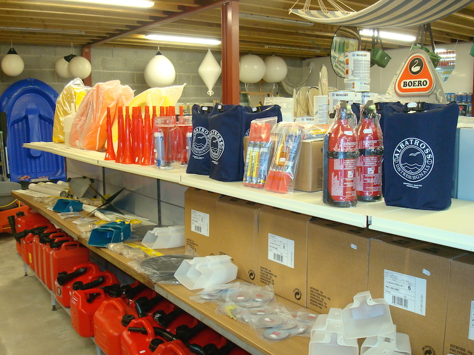
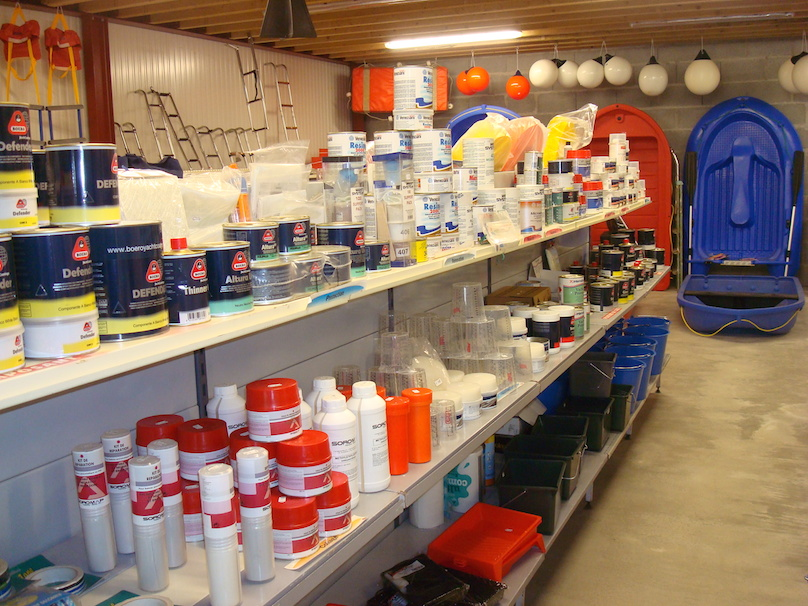
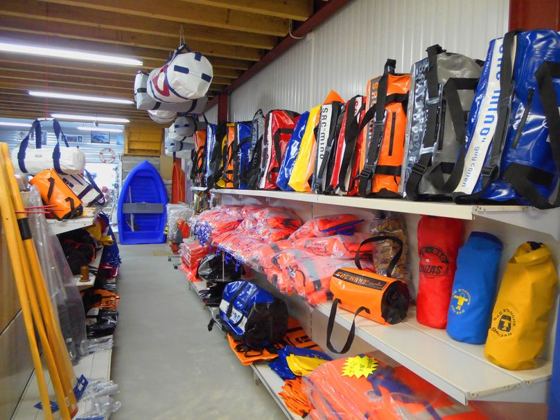
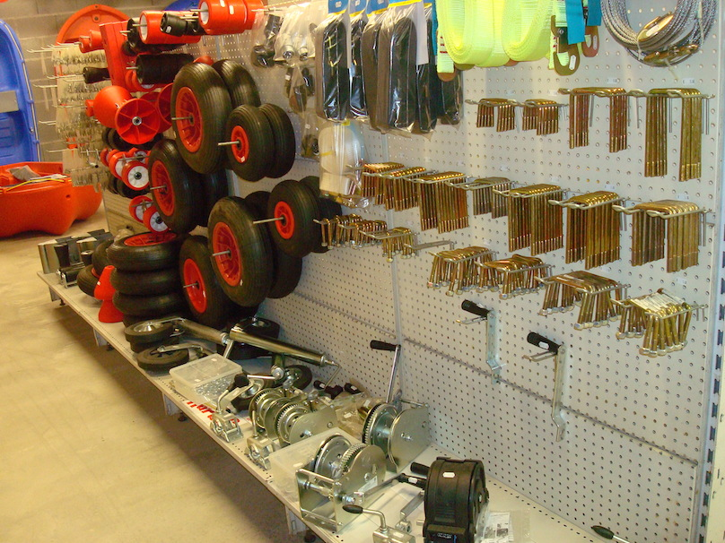

Astuce: utilisez les touches J et K du clavier pour naviguer à travers le site!
Astuce: utilisez les touches J et K du clavier pour naviguer à travers le site!
Accastillage
Armement de sécurité
- gilets de sauvetage : adulte ou enfant, automatique ou classique
- harnais de sauvetage
- radeau de sauvetage
- bouées de sauvetage
- fusée de sécurité de type moins et plus de 6 miles des côtes
- extincteurs
- pavillonnerie (français, anglais, belge, breton …)
- mouillage (ancres et cordages)
- cartes marine
- compas de route magnétique
- VHF portable
- librairie nautique (catégorie moins de 6 miles ou plus de 6 miles)
- cartes de navigation
- règles de balisage
- RIPAM (Règlementation International Pour Prévenir les Abordages en Mer)
- annuaires de marée
- journal de bord

Accastillage, visserie
- Manilles -inox droites, lyres, longues, torses, larges- (D. 4 à D. 22)
- Mousquetons inox
- Emerillons
- Cosses inox & plastiques, ridoir
- Goupilles & anneaux brisés
- Colliers inox
- Cadenas inox & laiton
- Girouettes
- Visserie inox A4 (visses bois, tôle, métaux – rondelles – écrous – tiges filetées …)
- Mouillage
- Chaine galvanisés calibrées (D. 6 à D. 12)
- Manilles droites, lyres
- Emerillons GALVA (D. 8 à D. 20)
- Daviers
- Manilles de mouillage
- Bouées de mouillage
- Ancres
- Grappin (0,7 ; 1,2 ; 2,5 ; 3,2 kg)
- POP (2,5 ; 5 ; 7 ;10 kg)
- FOB HP (6, 8, 10, 12 kg)
- Avirons, dames de nage, échelles, pare-battages
- Lettres & chiffres (immatriculation) adhésifs (velcro, adhésifs étanches, adhésifs mousses Vinhyl …)
Peinture
- Antifouling
- matrice dur, érodable, semi-érodable
- saisonnier -bleus, rouges, vert, blanc, noir, gris-
- Laques
- finition
- primaires (époxy)
- sous-couches
- peinture de cales
- Vernis (mat ou brillant)
- Résines
- polyester
- époxy
- mastic époxy
- mastic polyester
- mastic-armé (choucroute)
- Gelcoat
- Fibres de verre
- Charges (microballon, microlight, silice, …)
- Colles Polyuréthane (sikaflex)
- Pinceaux, rouleaux, abrasifs, ébulleurs, doseurs, …

Produits d'entretien
- Polish (gelcoat, plexi-glasse, inox)
- Déjaunissant
- Nettoyant (coques, ponts, pneumatiques, fientes mouettes, cales, moteurs)
- Anti-mouettes (tourniquet, …)
- Brosserie
Cordage
- Drisse polyester (3 à 12 mm, blanche & couleurs)
- Ecoute (3 à 16 mm, blanche & couleurs)
- Amarrage : polypropylène, polyamide, polyester (6 à 22 mm, blanc et couleurs)
- Dyneema (3 à 8 mm, couleurs)
- Sandow (4 à 6 mm, blanc et noir)
- Filets de bastingage
- Ferlettes et milles pattes
- Cable inox (3, 4 mm)
- Mini bobines (couleur et chanvre), fils à surlier, fils à coudre
Loisirs, glisse
- Ski-nautique
- Bouées-tractées, rideur
- Cordes à ski, à bouées, flammes orange, gilets 50 Newtons, sacs COTTEN …

Électricité
- Pompe de cale
- Cosses électrique
- Fils électrique
- Tableaux électrique
- Fusibles
- Feux de route
- Batteries Marine
Remorques
- Roue de mise à l’eau
- Patin (rouleaux)
- Bride
- Prise remorques
- Sangle de traction
- Roue jokey
- Antivol remorque
